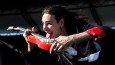
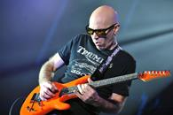
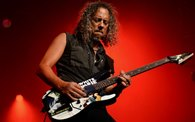
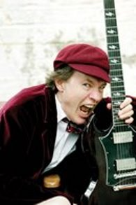

Гитаристы
Стивен Сиро Вай
Стив Вай (Стивен Сиро Вай, родился 6 июня 1960, в Лонг-Айленд, Нью-Йорк, США) — американский гитарист-виртуоз, также известен как композитор, вокалист, продюсер, актёр. Начал свою карьеру в качестве гитариста и интерпретатора у Фрэнка Заппы, с которым записывался и гастролировал начиная с 1980 года. С 1983 года ведёт самостоятельную карьеру как солирующий гитарист. По состоянию на 2012 год выпустил 9 сольных альбомов общим тиражом более 15 млн экземпляров, трижды лауреат Грэмми. Помимо работы с Заппой сотрудничал и гастролировал с такими коллективами и музыкантами как Alcatrazz, Whitesnake, Дэвидом Ли Ротом, был постоянным участником концертных туров проекта G3. В 1999 году основал собственный лейбл Favored Nations, ориентированный на запись виртуозных исполнителей.
Джозеф Сатриани

Джозеф «Джо» Сатриани ( род. 15 июля 1956 года,в Вестбери, Нью-Йорк, США) — американский гитарист-виртуоз. Учитель таких гитаристов, как Стив Вай, Кирк Хэммет, Алекс Сколник, Дэвид Брайсон, Чарли Хантер, Ларри ЛаЛондэ и многих других.
По мнению британского издания Classic Rock один из величайших гитаристов всех времен.
В конце 1993 года был приглашён в Deep Purple на замену ушедшего из группы во время гастролей Ричи Блэкмора, однако на следующий год покинул группу из-за контрактных обязательств.
За всю карьеру было продано более 10 миллионов копий альбомов Сатриани.
Кирк Ли Хэмметт

Кирк Ли Хэмметт(родился 18 ноября 1962,в Сан-Франциско, Калифорния, США) — американский гитарист, автор песен. Наиболее известен как участник группы Metallica. Занимал 11-е место в списке величайших гитаристов всех времён. Был учеником гитарного виртуоза Джо Сатриани. Владеет именной серией гитар фирмы ESP (модели KH). Кроме них использует Gibson Les Paul, Jackson Randy Rhoads, ESP Flying V и гитары фирмы Fender.
Ангус МакКиннон Янг
Ангус МакКиннон Янг (родился 31 марта 1955 года, Глазго, Шотландия) — бессменный соло-гитарист и автор песен австралийской рок-группы AC/DC. Янг известен своим мастерством игры на гитаре, дикой энергией на сцене и школьной униформой.Ангус использовал гитару фирмы Гибсон — Gibson SG в различных модификациях (его первоначальная и основная на сегодняшний день — Gibson SG-1968). Его редко видели с другой гитарой. Однако, у него также есть Телекастеры, Gibson Firebird и ES-335. Когда AC/DC играли джэм-версию «Rock me, baby» с Rolling Stones в 2003 г., он играл на Gibson ES-335, это был едва ли не единственный раз, когда он выступал не с Gibson SG.